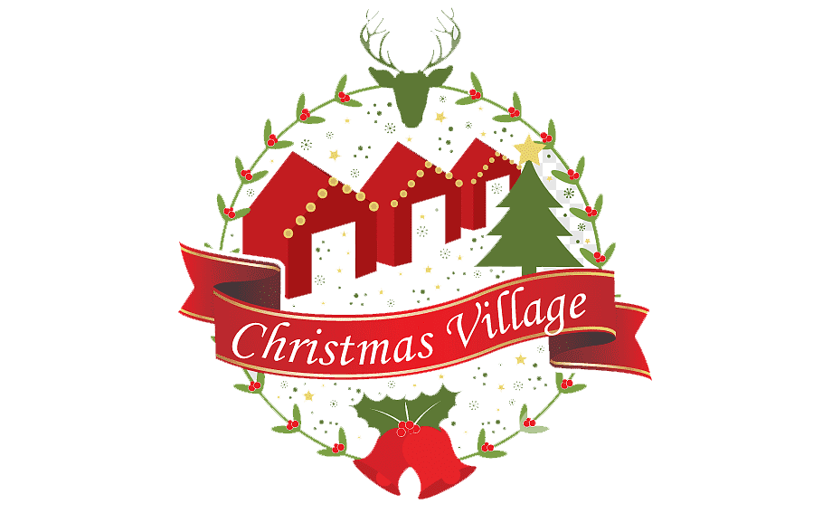

Идея подарка: Волшебный Календарь Приключений
Описание:
Подарите вашему близкому человеку уникальный Волшебный Календарь Приключений, который будет наполнен необычными и захватывающими идеями на каждый день года.
Каждый месяц предоставляет новое приключение или задание, которое поможет им испытать что-то новое, научиться чему-то, или просто получить удовольствие.
Примеры заданий:
Февраль, День 14: Проведите день, полностью отказавшись от технологий. Запишите свои впечатления.
Май, День 3: Создайте свой собственный рецепт блюда. Пригласите друзей на дегустацию.
Сентябрь, День 22: Посетите местное мероприятие или выставку, о которой вы раньше не слышали.
Декабрь, День 10: Найдите способ сделать что-то доброе для незнакомца, не раскрывая своей личности.
Каждое задание снабжено небольшим описанием и подсказками, чтобы создать уникальный опыт для вашего близкого. В конце года у них будет множество воспоминаний и новых навыков, полученных благодаря вашему оригинальному подарку. Этот подарок не только разнообразит их повседневную жизнь, но и создаст незабываемые моменты, наполняя год приключениями и радостью.
Идея подарка: Звездное Небо в Доме
Описание:
Подарите вашему близкому человеку уникальное впечатление с помощью проектора звездного неба для дома. Этот устройство создает атмосферу звездного неба прямо в комнате. Они смогут наслаждаться расслабляющей обстановкой с тысячами мерцающих звезд прямо на потолке и стенах. Пульт управления позволит им выбирать цвета звезд, интенсивность свечения и даже проигрывать мягкую музыку для полного релакса. Этот подарок подходит как для взрослых, так и для детей, создавая уют и волшебство в доме на весь год.Как насчет подарков, которые будут связаны с темой будущего и новых технологий? Вот несколько идей:
Виртуальная реальность:
Подарите подарочный сертификат на сеанс виртуальной реальности или набор для виртуальной реальности, который позволит им исследовать виртуальные миры и совершить удивительные приключения.
Дрон:
Приобретите им небольшой, но мощный дрон, который позволит им исследовать окружающий мир с высоты птичьего полета.
Умный дом:
Подарите им набор устройств для умного дома, таких как умные розетки, умные лампы или умный домашний ассистент. Это позволит им управлять своим домом с помощью голосовых команд и сделает их жизнь более комфортной и удобной.
Гаджеты для здоровья и фитнеса:
Подарите им умные часы, активный трекер или набор для здорового образа жизни, который поможет им отслеживать физическую активность, сон и здоровье.
3D-принтер:
Подарите им 3D-принтер, который позволит им создавать и распечатывать уникальные и креативные предметы, от игрушек до украшений.